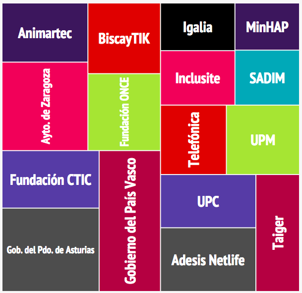
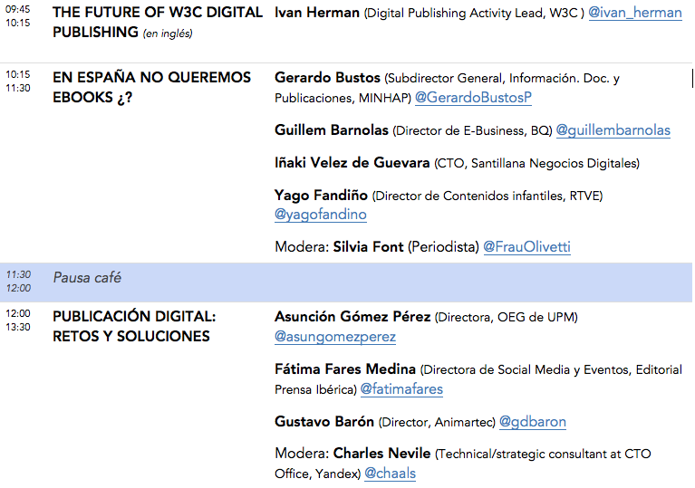
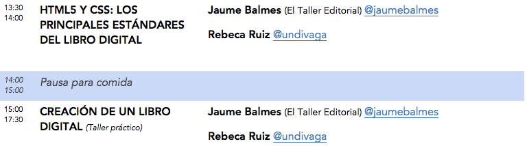
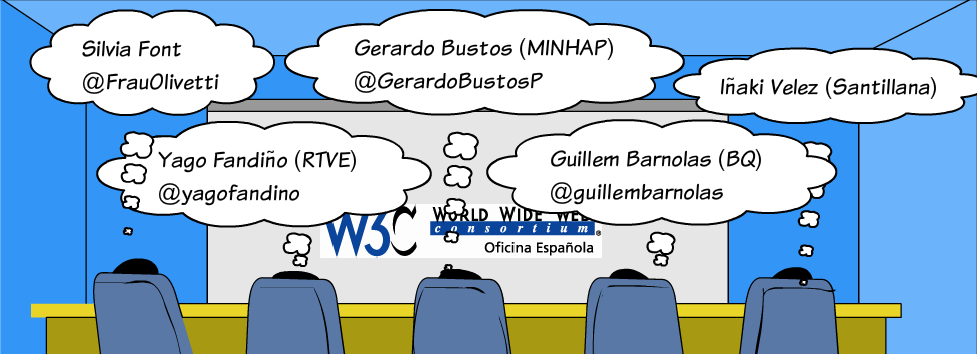
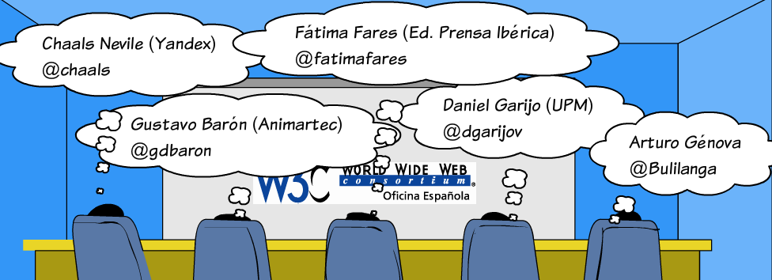

Día W3C en España
Madrid, 14 octubre 2015
Recursos
{kind=link}
26 años de Web
(pre)Historia de la Web

(1990) WorldWideWeb

(1994) World Wide Web Consortium
- Organismo neutro
- Dirigido por Tim Berners-Lee
- 79 personas en el Team
- 408 Miembros
- +70 Grupos del W3C (con más de 1.500 investigadores)
{kind=link}
Realmente WorldWide

Miembros en España

¿Qué hace el W3C?
Voice WebCGM PICS HTMLTidy Databinding WebOntology HTML CompoundDocumentFormats SPARQL WAI Web APIs Libwww PatentPolicy OWL TimedText XMLEncryption Multimodal XML RichWebClients XMLProcessing DeviceIndependence URI/URL DOM HTTP Accessibility RDF WebApplicationFormats XMLBase Jigsaw XLink I18N P3P QualityAssurance XMLKeyManagement UbiquitousWeb InkML Incubator XPath WebServices XForms CSS SOAP Mobile SMIL Rules SVG Amaya SemanticWeb MathML
Especificaciones, directrices y herramientas abiertas con la política de patentes más transparente en Internet
La Plataforma Web Abierta
Agenda


EN ESPAÑA NO QUEREMOS EBOOKS ¿?

PUBLICACIÓN DIGITAL: RETOS Y SOLUCIONES
